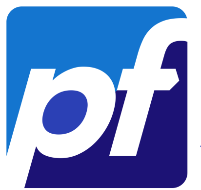
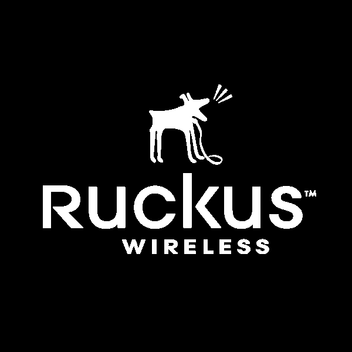
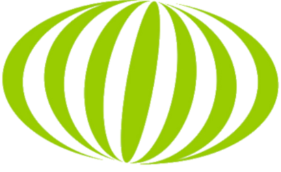
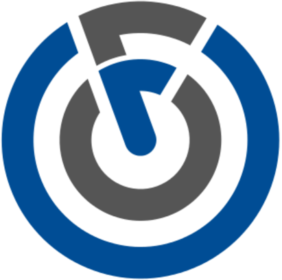

pfSense
O pfSense é open source, licenciado sob BSD license, baseado no FreeBSD e adaptado para assumir o papel de um firewall e/ou roteador de redes.
Zabbix
O Zabbix serve para monitorar a infraestrutura de TI, como redes, servidores, máquinas virtuais e serviços em nuvem.

Ruckus
RUCKUS WIRELESS é uma marca de software e equipamentos de rede com e sem fio de propriedade da CommScope.

DaloRADIUS
DaloRADIUS é uma plataforma web RADIUS avançada destinada ao gerenciamento de hotspots e implantações de ISP de uso geral.

FreeRADIUS
FreeRADIUS é o mais amplo servidor de RADIUS em código livre do mundo, que provê autenticação, autorização e contabilidade.